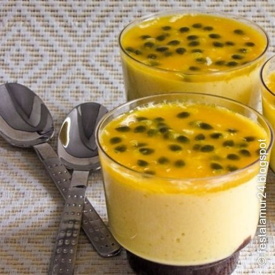

Passion Fruit Mousse

You want to learn how to make this delicious passion fruit mousse? check it out now!
Ingredients:
- 1 cup (200 ml) concentrated passion fruit juice
- 1 can of condensed milk
- 1 can of sour cream
- 1 packet of colorless gelatin powder (12 g) hydrated and melted according to package instructions
Syrup:
- Pulp with seeds of 2 ripe passion fruit
- 3 tablespoons of sugar
- 1/3 cup (tea) of water
Steps:
- Beat the passion fruit juice with the condensed milk and the cream in the blender until you get an aerated cream.
- Add the gelatin and beat for 1 to 2 minutes to mix well.
- Distribute in individual bowls and refrigerate for 4 to 6 hours or until firm.
- Serve drizzled with syrup.
Syrup
- Bring the ingredients to a boil and let it boil for 2 to 3 minutes. Use cold.